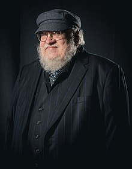
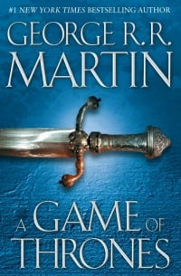
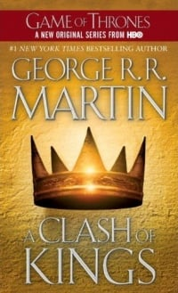
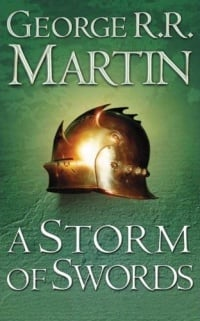
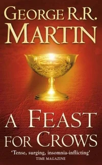
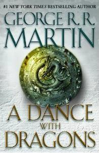
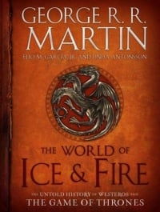
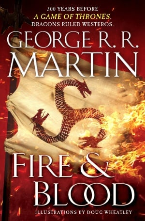

George R. R. Martin

A picture of George
The Life of George
- 1948 Born in Bayonne, New Jersey. Starts selling short monster stories to other neighborhood children since he was a kid.
- 1964 Attends the first Comic-Con.
- 1970 Starts professionally selling science fiction short stories. His first sale was The Hero published by Galaxy magazine. Earns a B.S in journalism at Northwestern University, Evanston, Illinois.
- 1971 Earns a M.S in journalism at Northwestern University.
- 1972-1974 Refuses to join the Vietnam War and instead does service work.
- 1973 Publishes With Morning Comes Mistfall in Analog magazine and gets a nomination for both the Hugo Award and Nebula Awards.
- 1973-1976 During his early 20s he wasn't able to live only by his writing profits, and started working as a chess tournament director for the Continental Chess Association.
- 1975 Wins the Hugo Award for Best Novella with A Song for Lya.
- 1976 Wins the Locus Award for Best Novella with The Storms of Windhaven.
- 1976-1979 Works as an English and Journalism instructor an Writer in Residence at Clarke College.
- 1977 Publishes his first novel, Dying of the Light. Wins the Locus Award for Best Author Collection with A Song for Lya and other stories.
- 1979 Resignes from his job and decides to be a full-time writer, moving to Santa Fe, New Mexico. Publishes Sandkings. Wins the Nebula Award for Best Novelette with Sandkings.
- 1980 Publishes Nightflyers, that was adapted to the 1987 homonymous film. Wins the Hugo Award for Best Novelette with Sandkings. Wins the Hugo Award for Best Short Story with The Way of Cross and Dragon.
- 1981 Wins the Locus Award for Best Novella with Nightflyers.
- 1982 Publishes Fevre Dream, one his most appreciated works. Wins the Locus Award for Best Novelette with Guardians. Wins the Locus Award for the Best Single Author Collection Sandkings.
- 1983-1984 Publishes The Armageddon Rag, that was a commercial failure, and "essentialy destroyed my career at the time" as he recalls.
- 1984 Wins the Locus Award for Best Novelette with The Monkey Treatment.
- 1984-1989 Works mainly for Hollywood on television projects like The Twilight Zone and Beauty and the Beast, that paid better than writing books.
However, he never stopped writing literature, and in this period publishes Portraits of His Children and a collection of Haviland Tuf stories, later collected in Tuf Voyaging,
and starts working as editor in the Wild Cards book series, a role that still occupies today.
Wins the Nebula Award for Best Novelette with Portraits of His Children.
Wins the Bram Stoker Award for Best Long Fiction with The Pearl-Shaped Man.
Wins the World Fantasy Award for Best Novella with The Skin Trade. - 1991 Grown frustrated that a lot of his TV work was not getting made,
and that budget limitations were very strict about what he could and couldn't do,
he decided to return writing books.
In this year he started writing Avalon, a science fiction novel,
but after a few chapters, he had a vivid idea of "a boy seeing a man's beheading
and finding direwolves in the snow".
Putting Avalon aside, Martin started writing the new story, that will become A Game of Thrones, the first book of the A Song of Ice and Fire series. - 1996 Publishes A Game of Thrones. 
- 1997 Wins the Hugo Award for Best Novella with Blood of the Dragon.
Wins the Locus Award for Best Fantasy Novel with A Game of Thrones.
Nominated at the Nebula Award for Best Novel with A Game of Thrones. - 1998 Publishes The Hedge Knight and A Clash of Kings. 
- 1999 Wins the Locus Award for Best Fantasy Novel with A Clash of Kings. Nomitated at the Nebula Award for Best Novel with A Clash of Kings.
- 2000 Publishes A Storm of Swords. 
- 2001 Wins the Locus Award for Best Fantasy Novel with A Storm of Swords. Nomitated at the Hugo Award for Best Novel and Nebula Award for Best Novel with A Storm of Swords.
- 2003 Publishes The Sworn Sword.
- 2005 Publishes A Feast for Crows. 
- 2006 Nominated at the Hugo Award for Best Novel with A Feast for Crows.
- 2010 Publishes The Mistery Knight.
- 2011 Publishes A Dance with Dragons. 
- 2012 Wins the Locus Award for Best Fantasy Novel with A Dance with Dragons. Nomitated at the Hugo Award for Best Novel with A Dance with Dragons. Wins a World Fantasy Award for Life Achievement.
- 2014 Publishes The World of Ice and Fire. 
- 2018 Publishes Fire and Blood. 
- 2023 Wins the Nebula Award for Best Game Writing (along with Hidetaka Miyazaki) with Elden Ring.